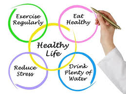

hey !
good morning !
have a nice day !
WELCOME
EARLY TO BED , EARLY TO RISE , MAKES A MAN HEALTHY WEALTHY AND WISE
Early morning walk is good for health.
Good excersise keeps the body fit.
A healthy breakfast is required to a refresing day.
The period between mid night and noon is called morning.
Enjoy the sunshine as it is a visual treat.
Be a Better person every day.
DON'T BE A LAZY PERSON !
A healthy lifestyle is one which helps to keep and improve your health and well-being.There are many different things that you can do to live a healthy lifestyle, such as eating healthy, being physically active, maintaining a healthy weigh, and managing your stress.
However, a healthy lifestyle is not just about healthy eating and exercise, it also about taking care of the whole you
your physical, mental, emotional, and spiritual well-being. And, that means taking care of you from the inside out.
HAVE A GREAT START TO YOUR DAY
Being mindful of your diet, physical activity and stress levels allows you to effectively balance all aspects of your life and the whole you
. Below are 10 important things you can do to live a healthy lifestyle
- Eat a variety of foods.
- Base your diet on plenty of foods rich in carbohydrates.
- Replace saturated with unsaturated fat.
- Enjoy plenty of fruits and vegetables.
- Reduce salt and sugar intake.
- Eat regularly, control the portion size.
- Drink plenty of fluids.
- Maintain a healthy body weight.
- HTML
- HyperText Markup Language

THANK YOU
VISIT AGAIN